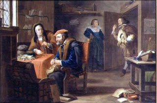

Gittin 47 - How to leave over to inheritors
If one is accustomed to sell himself to idolaters as a slave for profit, so that the community should ransom him, eventually he is not ransomed, but his children are ransomed after his death.
Resh Lakish worked hard but spent his earnings liberally and kindheartedly. All he left as inheritance was a quart of safflower oil, but he was still upset, quoting "they left their possessions to others."
When an idolater buys land in Israel, does this remove mitzvot such as tithes? No, because of "since the (holiness of the) land is Mine." Yes, because "and the land He gave to the men".
Art: The Money Lender by Dutch School